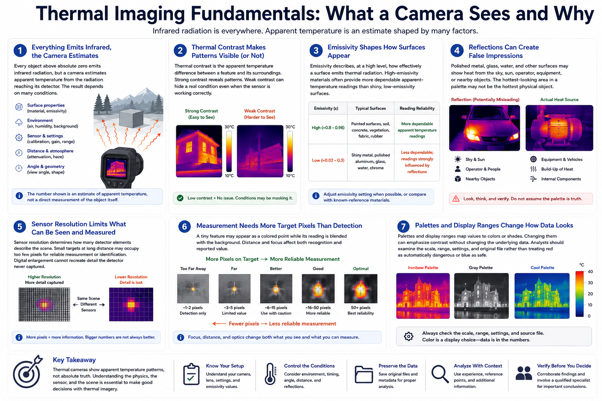

How Thermal Cameras See the World
Connecting to LMS... Progress: in progress

Narration
Every object above absolute zero emits infrared radiation, but a camera estimates apparent temperature from the radiation reaching its detector. The result depends on the surface, environment, sensor, distance, atmosphere, angle, and settings.
Thermal contrast is the apparent temperature difference between a feature and its surroundings. Strong contrast can make patterns easy to see. Weak contrast can hide a real condition even when the sensor is operating correctly.
Emissivity describes, at a high level, how effectively a surface emits thermal radiation. High-emissivity materials often provide more dependable apparent-temperature readings than shiny, low-emissivity surfaces, which can reflect radiation from other objects.
Reflections can create false impressions. Polished metal, glass, water, and other surfaces may show heat from the sky, sun, operator, equipment, or nearby objects. The hottest-looking area in a palette may not be the hottest physical object.
Sensor resolution determines how many detector elements describe the scene. Small targets at long distance may occupy too few pixels for reliable measurement or identification. Digital enlargement cannot recreate detail the detector never captured.
Measurement often needs more target pixels than simple detection. A tiny feature may appear as a colored point while its reading is blended with the background. Distance and focus therefore affect both recognition and reported value.
Palettes and display ranges map values to colors or shades. Changing them can emphasize contrast without changing the underlying data. Analysts should examine the scale, range, settings, and original file rather than treating red as automatically dangerous or blue as safe.